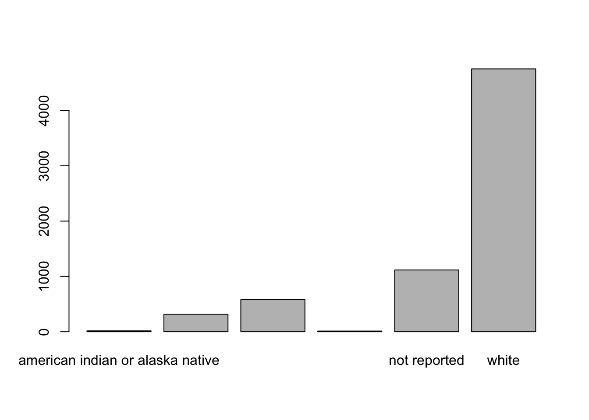
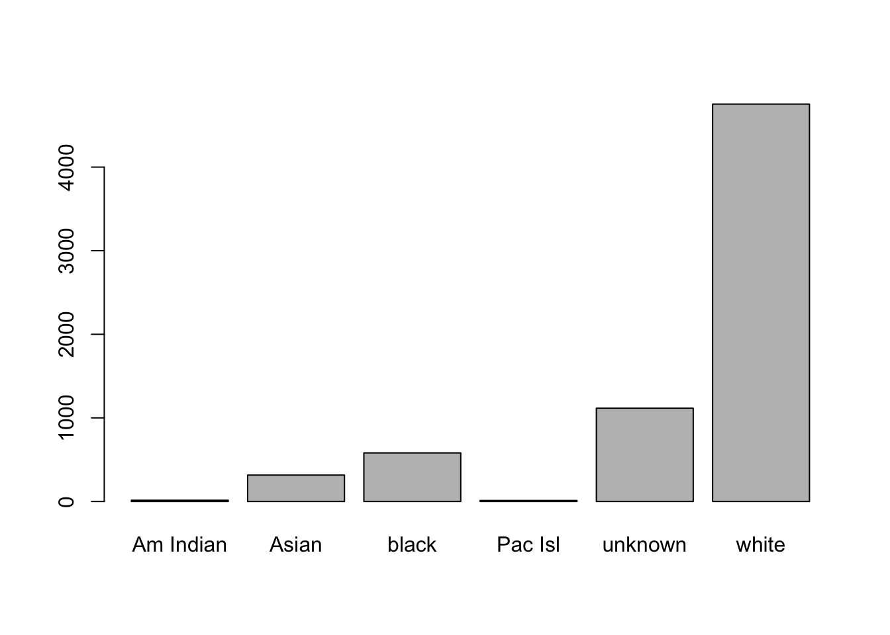

# make a directory
dir.create("data")Working with data
Introduction to R: Class 2
Data types and structures; slicing and subsetting data
Objectives
In the last section, we learned some fundamental principles of R and how to work in RStudio.
In this session, we’ll continue our introduction to R by working with a large dataset that more closely resembles that which you may encounter while analyzing data for research. By the end of this session, you should be able to:
- import spreadsheet-style data into R as a data frame
- extract portions of data from a data frame
- manipulate factors (categorical data)
Importing spreadsheet-style data into R
Open RStudio, and we’ll check to make sure you’re ready to start work again. You can check to see if you’re working in your project directory by looking at the top of the Console. You should see the path (location in your computer) for the project directory you created last time (e.g., ~/Desktop/intro_r).
If you do not see the path to your project directory, go to File -> Open Project and navigate to the location of your project directory. Alternatively, using your operating system’s file browser, double click on the r_intro.Rrpoj file.
Create a new R script (File -> New File -> R Script) and save it in your project directory with the name class2.R. Place the following comment on the top line as a title:
# Introduction to R: Class 2
In the last session, we recommended organizing your work in directories (folders) according to projects. While a thorough discussion of project organization is beyond the scope of this class, we will continue to model best practices by creating a directory to hold our data:
You should see the new directory appear in your project directory, in the lower right panel in RStudio. There is also a button in that panel you can use to create a new folder, but including the code to perform this task makes other people (and yourself) able to reproduce your work more easily.
Now that we have a place to store our data, we can go ahead and download the dataset:
# download data from url
download.file("https://raw.githubusercontent.com/fredhutchio/R_intro/master/extra/clinical.csv", "data/clinical.csv")The code above has two arguments, both encompassed in quotation marks: first, you indicate where the data can be found online. Second, you indicate where R should store a copy of the file on your own computer.
The output from that command may look alarming, but it represents information confirming it worked. You can click on the data folder to ensure the file is now present.
Notice that the URL above ends in clinical.csv, which is also the name we used to save the file on our computers. If you click on the URL and view it in a web browser, the format isn’t particularly easy for us to understand. You can also view the file by clicking on it in the lower right hand panel, then selecting “View File.”
The option to “Import Dataset” you see after clicking on the file references some additional tools present in RStudio that can assist with various kinds of data import. Because this requires installing additional software, complete exploration of these options is outside the scop of this class. For more information, check out this article.
The data we’ve downloaded are in csv format, which stands for “comma separated values.” This means the data are organized into rows and columns, with columns separated by commas.
These data are arranged in a tidy format, meaning each row represents an observation, and each column represents a variable (piece of data for each observation). Moreover, only one piece of data is entered in each cell.
Now that the data are downloaded, we can import the data and assign to an object:
# import data and assign to object
clinical <- read.csv("data/clinical.csv")You should see clinical appear in the Environment window on the upper right panel in RStudio. If you click on clinical there, a new tab will appear next to your R script in the Source window.
Clicking on the name of an object in the Environment window is a shortcut for running
View(clinical); you’ll see this code appear in the Console after clicking.
Now that we have the data imported and assigned to an object, we can take some time to explore the data we’ll be using for the rest of this course:
- These data are clinical cancer data from the National Cancer Institute’s Genomic Data Commons, specifically from The Cancer Genome Atlas, or TCGA.
- Each row represents a patient, and each column represents information about demographics (race, age at diagnosis, etc) and disease (e.g., cancer type).
- The data were downloaded and aggregated using an R script, which you can view in the GitHub repository for this course.
The function we used to import the data is one of a family of commands used to import the data. Check out the help documentation for read.csv for more options for importing data.
You can also import data directly into R using
read.csv, usingclinical <- read.csv("https://raw.githubusercontent.com/fredhutchio/R_intro/master/extra/clinical.csv"). For these lessons, we model downloading and importing in two steps, so you retain a copy of the data on your computer. This reflects how you’re likely to import your own data, as well as recommended practice for retaining data used in an analysis (since data online may be updated).
Challenge-data
Download, inspect, and import the following data files. The URL for each sample dataset is included along with a name to assign to the object. (Hint: you can use the same function as above, but may need to update the
sep =parameter) - URL: https://raw.githubusercontent.com/fredhutchio/R_intro/master/extra/clinical.tsv, object name:example1- URL: https://raw.githubusercontent.com/fredhutchio/R_intro/master/extra/clinical.txt, object name:example2
Importing data can be tricky and frustrating, However, if you can’t get your data into R, you can’t do anything to analyze or visualize it. It’s worth understanding how to do it effectively to save you time and energy later.
Data frames
Now that we have data imported and available, we can start to inspect the data more closely.
These data have been interpreted by R to be a data frame, which is a data structure (way of organizing data) that is analogous to tabular or spreadsheet style data. By definition, a data frame is a table made of vectors (columns) of all the same length. As we learned in our last session, a vector needs to include all of the same type of data (e.g., character, numeric). A data frame, however, can include vectors (columns) of different data types.
To learn more about this data frame, we’ll first explore its dimensions:
# assess size of data frame
dim(clinical)[1] 6832 20The output reflects the number of rows first (6832), then the number of columns (20).
We can also preview the content by showing the first few rows:
# preview first few rows
head(clinical) primary_diagnosis tumor_stage age_at_diagnosis vital_status morphology
1 C34.1 stage ia 24477 dead 8070/3
2 C34.1 stage ib 26615 dead 8070/3
3 C34.3 stage ib 28171 dead 8070/3
4 C34.1 stage ia 27154 alive 8083/3
5 C34.3 stage iib 29827 dead 8070/3
6 C34.1 stage iiia 23370 alive 8070/3
days_to_death state tissue_or_organ_of_origin days_to_birth
1 371 live C34.1 -24477
2 136 live C34.1 -26615
3 2304 live C34.3 -28171
4 NA live C34.1 -27154
5 146 live C34.3 -29827
6 NA live C34.1 -23370
site_of_resection_or_biopsy days_to_last_follow_up cigarettes_per_day
1 C34.1 NA 10.958904
2 C34.1 NA 2.191781
3 C34.3 2099 1.643836
4 C34.1 3747 1.095890
5 C34.3 NA NA
6 C34.1 3576 2.739726
years_smoked gender year_of_birth race ethnicity
1 NA male 1936 white not hispanic or latino
2 NA male 1931 asian not hispanic or latino
3 NA female 1927 white not hispanic or latino
4 NA male 1930 white not hispanic or latino
5 NA male 1923 not reported not reported
6 NA female 1942 not reported not reported
year_of_death bcr_patient_barcode disease
1 2004 TCGA-18-3406 LUSC
2 2003 TCGA-18-3407 LUSC
3 NA TCGA-18-3408 LUSC
4 NA TCGA-18-3409 LUSC
5 2004 TCGA-18-3410 LUSC
6 NA TCGA-18-3411 LUSCThe default number of rows shown is six. You can specify a different number using the n = parameter, demonstrated below using tail, which shows the last few rows
# show last three rows
tail(clinical, n = 3) primary_diagnosis tumor_stage age_at_diagnosis vital_status morphology
6830 C54.1 not reported 27326 dead 8950/3
6831 C54.1 not reported 24781 alive 8950/3
6832 C54.1 not reported 20318 alive 8950/3
days_to_death state tissue_or_organ_of_origin days_to_birth
6830 949 live C54.1 -27326
6831 NA live C54.1 -24781
6832 NA live C54.1 -20318
site_of_resection_or_biopsy days_to_last_follow_up cigarettes_per_day
6830 C54.1 NA NA
6831 C54.1 587 NA
6832 C54.1 0 NA
years_smoked gender year_of_birth race ethnicity
6830 NA female 1932 white not hispanic or latino
6831 NA female 1945 white not hispanic or latino
6832 NA female 1957 asian not hispanic or latino
year_of_death bcr_patient_barcode disease
6830 2008 TCGA-NG-A4VW UCS
6831 NA TCGA-QM-A5NM UCS
6832 NA TCGA-QN-A5NN UCSWe often need to reference the names of columns, so it’s useful to print only those to the screen:
# view column names
names(clinical) [1] "primary_diagnosis" "tumor_stage"
[3] "age_at_diagnosis" "vital_status"
[5] "morphology" "days_to_death"
[7] "state" "tissue_or_organ_of_origin"
[9] "days_to_birth" "site_of_resection_or_biopsy"
[11] "days_to_last_follow_up" "cigarettes_per_day"
[13] "years_smoked" "gender"
[15] "year_of_birth" "race"
[17] "ethnicity" "year_of_death"
[19] "bcr_patient_barcode" "disease" It’s also possible to view row names usingrownames(clinical), but our data only possess numbers for row names so it’s not very informative.
As we learned last time, we can use str to provide a general overview of the object:
# show overview of object
str(clinical) 'data.frame': 6832 obs. of 20 variables:
$ primary_diagnosis : chr "C34.1" "C34.1" "C34.3" "C34.1" ...
$ tumor_stage : chr "stage ia" "stage ib" "stage ib" "stage ia" ...
$ age_at_diagnosis : int 24477 26615 28171 27154 29827 23370 19025 26938 28430 30435 ...
$ vital_status : chr "dead" "dead" "dead" "alive" ...
$ morphology : chr "8070/3" "8070/3" "8070/3" "8083/3" ...
$ days_to_death : int 371 136 2304 NA 146 NA 345 716 2803 973 ...
$ state : chr "live" "live" "live" "live" ...
$ tissue_or_organ_of_origin : chr "C34.1" "C34.1" "C34.3" "C34.1" ...
$ days_to_birth : int -24477 -26615 -28171 -27154 -29827 -23370 -19025 -26938 -28430 -30435 ...
$ site_of_resection_or_biopsy: chr "C34.1" "C34.1" "C34.3" "C34.1" ...
$ days_to_last_follow_up : int NA NA 2099 3747 NA 3576 NA NA 1810 956 ...
$ cigarettes_per_day : num 10.96 2.19 1.64 1.1 NA ...
$ years_smoked : int NA NA NA NA NA NA NA NA NA NA ...
$ gender : chr "male" "male" "female" "male" ...
$ year_of_birth : int 1936 1931 1927 1930 1923 1942 1953 1932 1929 1923 ...
$ race : chr "white" "asian" "white" "white" ...
$ ethnicity : chr "not hispanic or latino" "not hispanic or latino" "not hispanic or latino" "not hispanic or latino" ...
$ year_of_death : int 2004 2003 NA NA 2004 NA 2005 2006 NA NA ...
$ bcr_patient_barcode : chr "TCGA-18-3406" "TCGA-18-3407" "TCGA-18-3408" "TCGA-18-3409" ...
$ disease : chr "LUSC" "LUSC" "LUSC" "LUSC" ...The output provided includes:
- data structure: data frame
- dimensions: 6832 rows and 20 columns
- column-by-column information: each prefaced with a
$, and includes the column name, data type (num, int, Factor)
Factors are how character data are interpreted by R in data frames. We’ll talk more about working with factors at the end of this lesson.
Finally, we can also examine basic summary statistics for each column:
# provide summary statistics for each column
summary(clinical) primary_diagnosis tumor_stage age_at_diagnosis vital_status
Length:6832 Length:6832 Min. : 3982 Length:6832
Class :character Class :character 1st Qu.:19191 Class :character
Mode :character Mode :character Median :22842 Mode :character
Mean :22320
3rd Qu.:26002
Max. :32872
NA's :114
morphology days_to_death state
Length:6832 Min. : 0.0 Length:6832
Class :character 1st Qu.: 274.0 Class :character
Mode :character Median : 524.0 Mode :character
Mean : 878.2
3rd Qu.: 1044.5
Max. :10870.0
NA's :4645
tissue_or_organ_of_origin days_to_birth site_of_resection_or_biopsy
Length:6832 Min. :-32872 Length:6832
Class :character 1st Qu.:-26002 Class :character
Mode :character Median :-22842 Mode :character
Mean :-22320
3rd Qu.:-19191
Max. : -3982
NA's :114
days_to_last_follow_up cigarettes_per_day years_smoked gender
Min. : -64.0 Min. : 0.008 Min. : 8.00 Length:6832
1st Qu.: 345.0 1st Qu.: 1.370 1st Qu.:30.75 Class :character
Median : 650.0 Median : 2.192 Median :40.00 Mode :character
Mean : 976.8 Mean : 2.599 Mean :39.96
3rd Qu.: 1259.0 3rd Qu.: 3.288 3rd Qu.:50.00
Max. :11252.0 Max. :40.000 Max. :63.00
NA's :1118 NA's :5661 NA's :6384
year_of_birth race ethnicity year_of_death
Min. :1902 Length:6832 Length:6832 Min. :1990
1st Qu.:1937 Class :character Class :character 1st Qu.:2004
Median :1947 Mode :character Mode :character Median :2007
Mean :1948 Mean :2006
3rd Qu.:1957 3rd Qu.:2010
Max. :1993 Max. :2014
NA's :170 NA's :5266
bcr_patient_barcode disease
Length:6832 Length:6832
Class :character Class :character
Mode :character Mode :character
For numeric data (such as year_of_death), this output includes common statistics like median and mean, as well as the number of rows (patients) with missing data (as NA). For factors (character data, such as disease), you’re given a count of the number of times the top six most frequent factors (categories) occur in the data frame.
Subsetting data frames
Now that our data are available for use, we can begin extracting relevant information from them.
# extract first column and assign to a variable
first_column <- clinical[1]As discussed last time with vectors, the square brackets ([ ]) are used to subset, or reference part of, a data frame. You can inspect the output object by clicking on it in the environment. It contains all of the rows for only the first column.
When a single number is included in the square brackets, R assumes you are referencing a column. When you include two numbers in square brackets separated by a comma, R assumes the first number references the row and the second number references the column you desire.
This means you can also reference the first column as follows:
# extract first column
first_column_again <- clinical[ , 1]Leaving one field blank means you want the entire set in the output (in this case, all rows).
Challenge-extract
What is the difference in results between the last two lines of code?
Similarly, we can also extract only the first row across all columns:
# extract first row
first_row <- clinical[1, ]We can also extract slices, or sections of rows and columns, such as a single cell:
# extract cell from first row of first column
single_cell <- clinical[1,1]To extract a range of cells, we use the same colon (:) syntax from last time:
# extract a range of cells, rows 1 to 3, second column
range_cells <- clinical[1:3, 2]This works for ranges of columns as well.
We can also exclude particular parts of the dataset using a minus sign:
# exclude first column
exclude_col <- clinical[ , -1] Combining what we know about R syntax, we can also exclude a range of cells using the c function:
# exclude first 100 rows
exclude_range <- clinical[-c(1:100), ] So far, we’ve been referencing parts of the dataset based on index position, or the number of row/column. Because we have included column names in our dataset, we can also reference columns using those names:
# extract column by name
name_col1 <- clinical["tumor_stage"]
name_col2 <- clinical[ , "tumor_stage"]Note the example above features quotation marks around the column name. Without the quotation marks, R will assume we’re attempting to reference an object.
As we discussed with subsetting based on index above, the two objects created above differ in the data structure. name_col1 is a data frame (with one column), while name_col2 is a vector. Although this difference in the type of object may not matter for your analysis, it’s useful to understand that there are multiple ways to accomplish a task, each of which may make particular code work more easily.
There are additional ways to extract columns, which use R specific for complex data objects, and may be useful to recognize as your R skills progress.
The first is to use double square brackets:
# double square brackets syntax
name_col3 <- clinical[["tumor_stage"]]You can think of this approach as digging deeply into a complex object to retrieve data.
The final approach is equivalent to the last example, but can be considered a shortcut since it requires fewer keystrokes (no quotation marks, and only one symbol):
# dollar sign syntax
name_col4 <- clinical$tumor_stageBoth of the last two approaches above return vectors. For more information about these different ways of accessing parts of a data frame, see this article.
The following challenges all use the clinical object:
Challenge-days
Code as many different ways possible to extract the column
days_to_death.
Challenge-rows
Extract the first 6 rows for only
age_at_diagnosisanddays_to_death.
Challenge-calculate
Calculate the range and mean for
cigarettes_per_day.
Factors
Note: This section was written with a previous version of R that automatically interprets all character data as factors (this is not true of more recent versions of R). To execute the code in this section, please first import your data again, using the following modified command:
clinical <- read.csv("data/clinical.csv", stringsAsFactors = TRUE)This section explores one of the trickier types of data you’re likely to encounter: factors, which are how R interprets categorical data.
When we imported our dataset into R, the read.csv function assumed that all the character data in our dataset are factors, or categories. Factors have predefined sets of values, called levels. We can explore what this means by first creating a factor vector:
# create vector with factor data
test_data <- factor(c("placebo", "test_drug", "placebo", "known_drug"))
# show factor
test_data[1] placebo test_drug placebo known_drug
Levels: known_drug placebo test_drugThis vector includes four pieces of data (often referred to as items or elements), which are printed as output above. The second line of the output shows information about the levels, or categories, of our vector. We can also access this information separately, which is useful if the data (vector) has a large number of elements:
# show levels of factor
levels(test_data) [1] "known_drug" "placebo" "test_drug" The levels in this test dataset are currently listed in alphabetical order, which is the default presentation in R. The order of factors dictates how they are presented in subsequent analyses, so there are definitely cases in which you may want the levels in a specific order. In the case of test_data, we may want to keep the two drug treatments together, with placebo at the end:
# reorder factors to put placebo at end
test_data <- factor(test_data, levels = c("known_drug", "test_drug", "placebo"))
# show reordered
test_data[1] placebo test_drug placebo known_drug
Levels: known_drug test_drug placeboThis doesn’t change the data itself, but does make it easier to manage the data later.
Another useful aspect of factors is that they are stored as integers with labels. This means that you can easily convert them to numeric data:
# converting factors to numeric
as.numeric(test_data)[1] 3 2 3 1This can be handy for some types of statistical analyses, and also illustrates the importance of ordering your levels appropriately.
We can apply this knowledge to our clinical dataset, by first observing how the data are presented when creating a basic plot:
# quick and dirty plot
plot(clinical$race)
The labels as presented by default are not particularly readable, and also lack appropriate capitalization and formatting. While it is possible to modify only the plot labels, we would have to do that for all of our subsequent analyses. It is more efficient to modify the levels once:
# assign race data to new object
race <- clinical$race
levels(race)[1] "american indian or alaska native"
[2] "asian"
[3] "black or african american"
[4] "native hawaiian or other pacific islander"
[5] "not reported"
[6] "white" By assigning the data to a new object, we can more easily perform manipulations without altering the original dataset.
The output above shows the current levels for race. We can access each level using their position in this order, combined with our knowledge of square brackets for subsetting:
levels(race)[1][1] "american indian or alaska native"We can modify them to improve their formatting by assigning a new level (name) of our choosing:
# correct factor levels
levels(race)[1] <- "Am Indian"
levels(race)[2] <- "Asian" # capitalize asian
levels(race)[3] <- "black"
levels(race)[4] <- "Pac Isl"
levels(race)[5] <- "unknown"
# show revised levels
levels(race) [1] "Am Indian" "Asian" "black" "Pac Isl" "unknown" "white" Although we’re not doing so here, we could also reorder the levels (as we did for test_data).
Once we are satisfied with the resulting levels, we assign the modified factor back to the original dataset:
# replace race in data frame
clinical$race <- race
# replot with corrected names
plot(clinical$race)
This section was a very brief introduction to factors, and it’s likely you’ll need more information when working with categorical data of your own. A good place to start would be this article, and exploring some of the tools in the tidyverse (which we’ll discuss in the next lesson).
Challenge-not-reported
In your clinical dataset, replace “not reported” in ethnicity with NA
Challenge-remove
What Google search helps you identify additional strategies for renaming missing data?
Optional: Creating a data frame by hand
This last section shows two different approaches to creating a data frame by hand (in other words, without importing the data from a spreadsheet). It isn’t particularly useful for most of your day-to-day work, and also not a method you want to use often, as this type of data entry can introduce errors. However, it’s frequently used in online tutorials, which can be confusing, and also helps illustrate how data frames are composed.
The first approach is to create separate vectors (columns), and then join them together in a second step:
# create individual vectors
cancer <- c("lung", "prostate", "breast")
metastasis <- c("yes", "no", "yes")
cases <- c(30, 50, 100)
# combine vectors
example_df1 <- data.frame(cancer, metastasis, cases)
str(example_df1)'data.frame': 3 obs. of 3 variables:
$ cancer : chr "lung" "prostate" "breast"
$ metastasis: chr "yes" "no" "yes"
$ cases : num 30 50 100The resulting data frame has column headers, identified from the names of the vectors combined together.
The next way seems more complex, but represents the code above combined into one step:
# create vectors and combine into data frame simultaneously
example_df2 <- data.frame(cancer = c("lung", "prostate", "breast"),
metastasis = c("yes", "no", "yes"),
cases = c(30, 50, 100), stringsAsFactors = FALSE)
str(example_df2)'data.frame': 3 obs. of 3 variables:
$ cancer : chr "lung" "prostate" "breast"
$ metastasis: chr "yes" "no" "yes"
$ cases : num 30 50 100As we learned above, factors can be particularly difficult, so it’s useful to know that you can use stringsAsFactors = FALSE to import such data as character instead.
Wrapping up
In this session, we learned to import data into R from a csv file, learned multiple ways to access parts of data frames, and manipulated factors.
In the next session, we’ll begin to explore a set of powerful, elegant data manipulation tools for data cleaning, transforming, and summarizing, and we’ll prepare some data to visualize in our final session.
Extra exercises
The following exercises all use the same clinical data from this class.
Challenge-disease-race
Extract the last 100 rows for only disease and race and save to an object called disease_race.
Challenge-min-max
Calculate the minimum and maximum for days_to_death.
Challenge-factors
Change all of the factors of race to shorter names for each category, and appropriately indicate missing data.